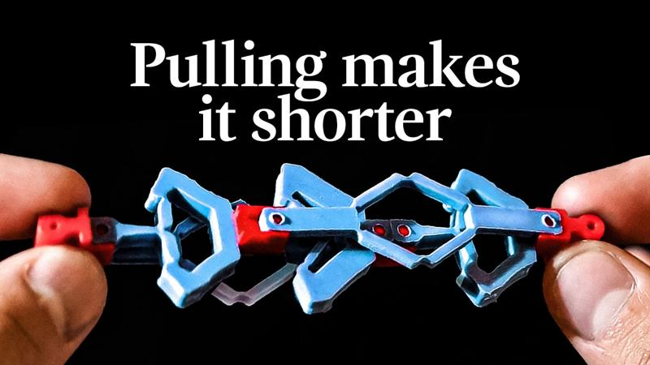
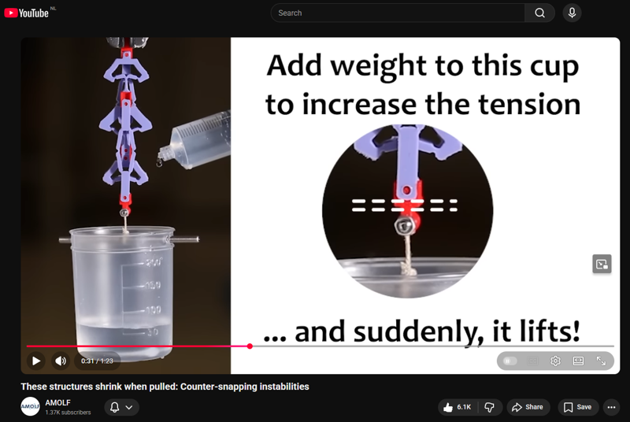
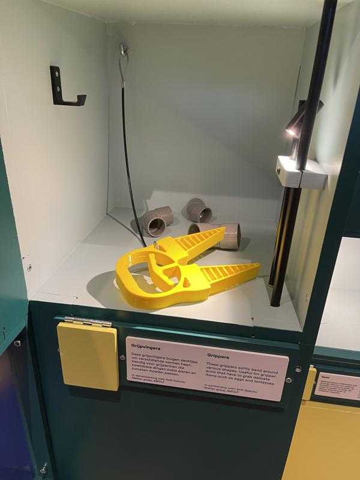
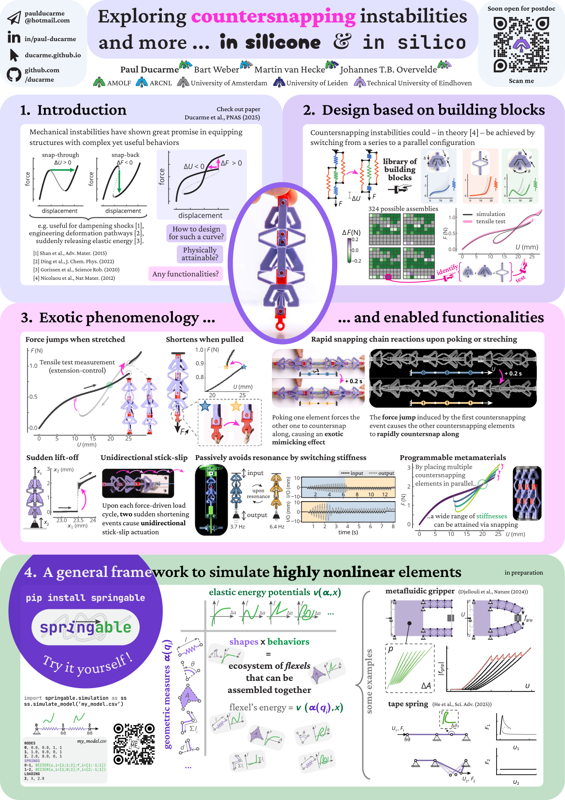

Ducarme P., Weber B., van Hecke M., Overvelde J.T.B.,
Simulating mechanical systems from
entities with arbitrarily complex deformation paths,
under review
[preprint],
[github repository],
[documentation]
Stinissen K, Ducarme P., Weber B., Gorissen B., Overvelde J.T.B.,
Functionalities enabled by pneumatic countersnapping instabilities, in preparation
Kurt E., Ducarme P., Picella S., Overvelde J.T.B.,
Heat-induced instabilites in silicone-LCE
composite structures for locomotion, in preparation
Ducarme P., Koppen S., Overvelde J.T.B.,
Computation of deformation paths for stimuli-driven nonlinear reconfigurable structures,
in preparation
awards
Best poster award,
2024 Multifunctional Materials and Structures Gordon’s research conference (GRC),
Ventura, California, United States
best poster award, GRC 2024
outreach
Featured in and collaborated with Veritasium (18M+ subscribers) on video "This mechanism shrinks when pulled" (10M+ views). Discussed and showcased research on countersnapping instabilities on screen and prepared animations. [video link]

featured on Veritasium
Movie showing countersnapping instabilities in action (1m24s),
'These structures shrink when pulled: counter-snapping instabilities',
seen on YouTube over 300k times,
watch the movie on YT

countersnapping promo movie
Design of a 3d-printed hand-actuated soft gripper for the Nemo Science Museum,
Exhibition 'Inventors from nature' (Dutch: 'Uitvinders uit de natuur'),
2023, Amsterdam, Netherlands
[exhibition link]

soft gripper for the Nemo Science Museum
'Vernuftig ontwerp zorgt voor eigenwijs gedrag',
2025, deingenieur.nl
[read article]
'New structures shrink instead of stretching when pulled',
2025, newsatlas.com
[read article]
'Countersnapping structures shrink when pulled',
2025, techxplore.com
[read article]
talks and posters
talks
Exotic properties enabled by counter-snapping instabilities,
2024 SES Annual Technical Meeting,
Hangzhou, China
[description of session 9.2]
Exotic functionalities enabled by counter-snapping instabilities,
2024 Multifunctional Materials and Structures Gordon’s research seminar (GRS),
Ventura, California, United States
[link]
Surprising deformations in structures made out flexibles building blocks,
2023 Creative Differences Workshop (London Design Biennal),
London, United Kingdom
[link]
Exotic properties enabled by a mechanical metamaterial that contracts under increasing tension,
2023 APS March Meeting,
Las Vegas, Nevada, United States
[abstract]
Design of a mechanical metamaterial with a negative displacement transition,
2022 Modern Mechanics Plus Workshop,
Amsterdam, Netherlands
posters
Exploring countersnapping instabilities and more in silicone and in silico,
2025 Functionality Through Nonlinearity,
London, United Kingdom

poster FTN 2025
Exotic properties enabled by counter-snapping instabilities,
2024 SES Annual Technical Meeting,
Hangzhou, China
Exotic functionalities enabled by counter-snapping instabilities,
2024 Multifunctional Materials and Structures Gordon’s research conference (GRC),
Ventura, California, United States


{kind=link}
{kind=link}
{kind=link}
{kind=link}